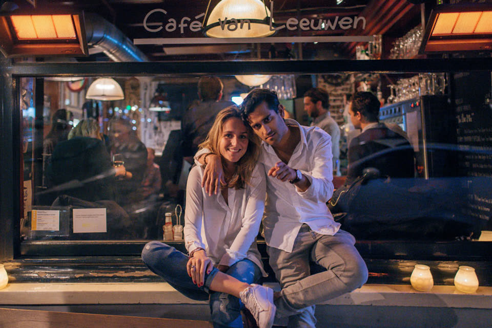

Beneden: het café
Een kleurrijke smeltkroes van buurtbewoners, vaste gasten en passanten weet het café al ruim twintig jaar te vinden. Sinds 2001 op de hoek van de Keizersgracht en de Utrechtsestraat, met een schitterend uitzicht over de grachtengordel.
Het gevelterras heeft de perfecte ochtendzon. Aan de overkant zit je op het ruim opgezette brugterras.